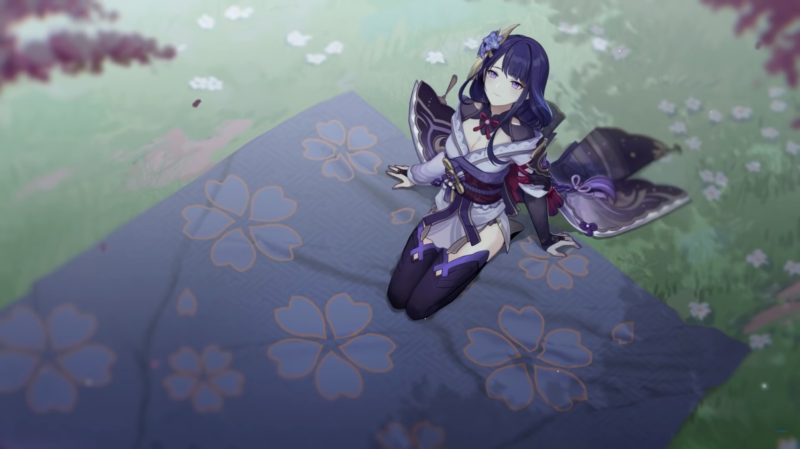
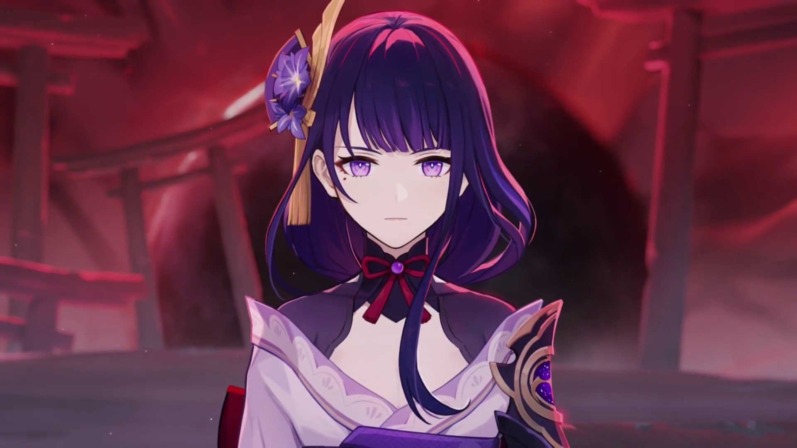
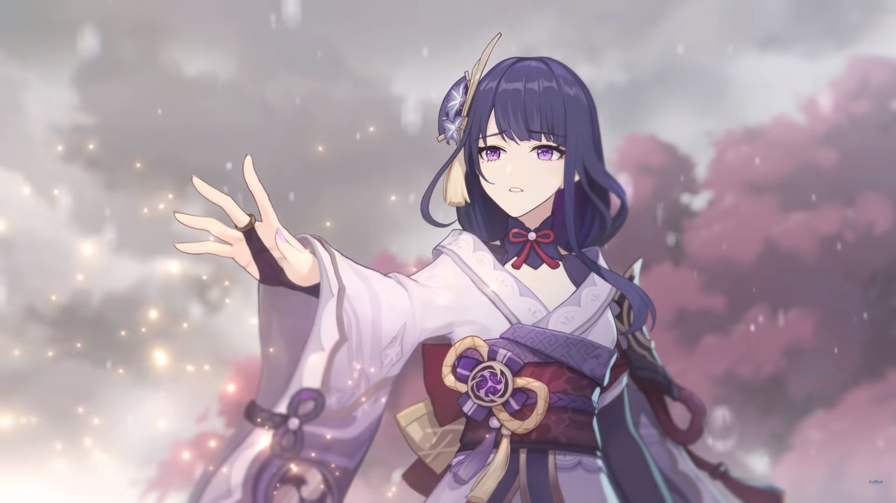
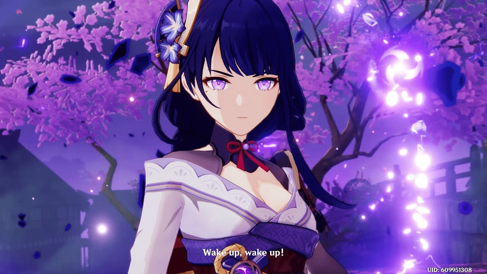
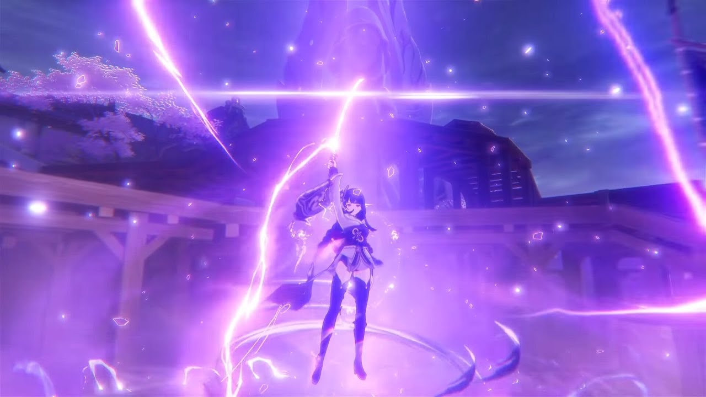
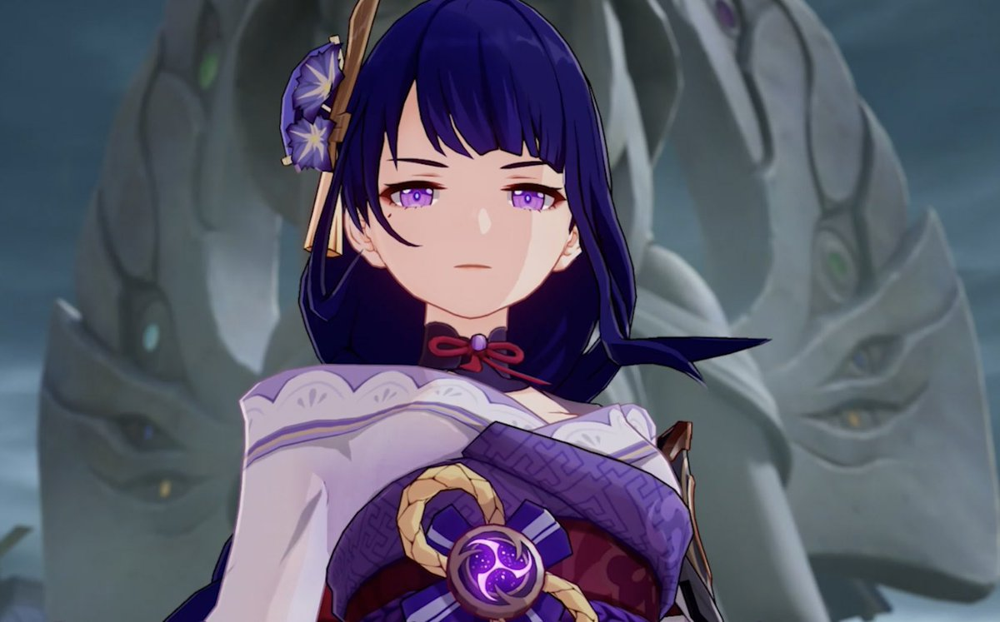

| "Таланты" | ||
| Тип | Название | Описание |
|---|---|---|
| Боевой навык - Обычная/Заряженная атака: | Исток | Обычная атака: До пяти быстрых ударов копьём. Заряженная атака: Проводит атаку вверх, для которой тратится определённое количество выносливости. Атака в падении: Стремительно падает на землю, атакуя всех врагов на пути. приземлившись, наносит урон по площади |
| Боевой навык - Элементальный навык | Превосходство: Зловещее знамение | Сёгун Райдэн приоткрывает своё Царство и наносит окружающим врагам Электро урон, после чего даёт всем окружающим членам отряда Глаз грозового наказания. |
| Боевой навык - Взрыв стихии | Тайное искусство: Мусо синсэцу | В этом состоянии сёгун Райдэн использует в бою свой меч, а её обычные атаки, заряженные атаки и атаки в падении получают инфузию Электро, которая не может быть отменена какой-либо другой инфузией. Когда эти атаки попадают по противнику, сёгун Райдэн восстанавливает энергию всем окружающим членам отряда. Энергия может восстановиться таким образом только раз в 1 сек., и этот эффект может быть активирован до 5 раз во время действия навыка. В этом состоянии повышается сопротивление прерыванию сёгуна Райдэн, и она получает иммунитет у урону от реакции Заряжен. Когда Мусо иссин активен, урон обычной атаки, заряженной атаки и атаки в падении будет считаться уроном взрыва стихии. |
| Пассивный талант 1 | Бесчисленные мечты | Когда окружающие члены отряда получают элементальные сферы, Чакра вожделения получает 2 уровня Решимости. Может возникнуть только 1 раз каждые 3 сек. |
| Пассивный талант 2 | ППросветлённая | Каждый 1% свыше 100% восстановления энергии сёгуна Райдэн даёт ей следующие эффекты: •Увеличивает восстановление энергии от Мусо иссин на 0.6%. •Увеличивает бонус Электро урона на 0.4%. |
| Пассивный талант 3 | Хранитель всего сущего | При возвышении одноручного и древкового оружия тратится на 50% меньше моры. |
| "Галерея" | |
|  |  |
|  |  |
|  |  |